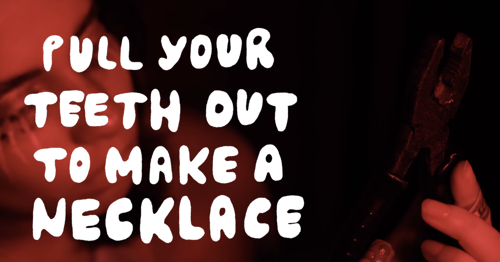
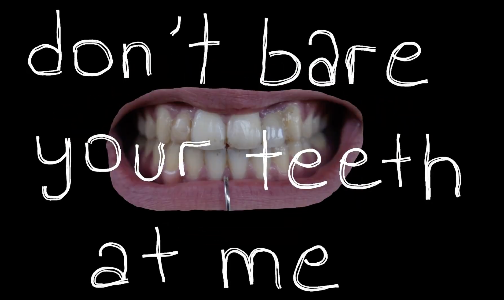
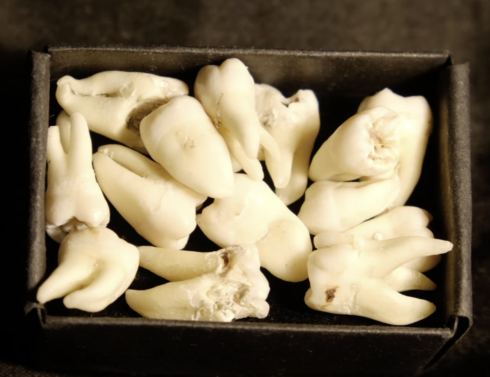

i have made a lot of artwork that utilizes teeth imagery over the years.
i think i just yearn to represent the teeth that i don't have. it is not a cosmetic fixation; i am okay with having yellow and crooked teeth. i just want to have enough of them in a way i cannot explain. i have collected a box of human teeth through my dentist acquaintances over the last few years, and i have been using real teeth in my video work for more authenticity.
these are examples of my work! click on the thumbnails to access them :3

how to spend time by yourself (2023), short film

you are an animal (2025), video

human form (2025), video